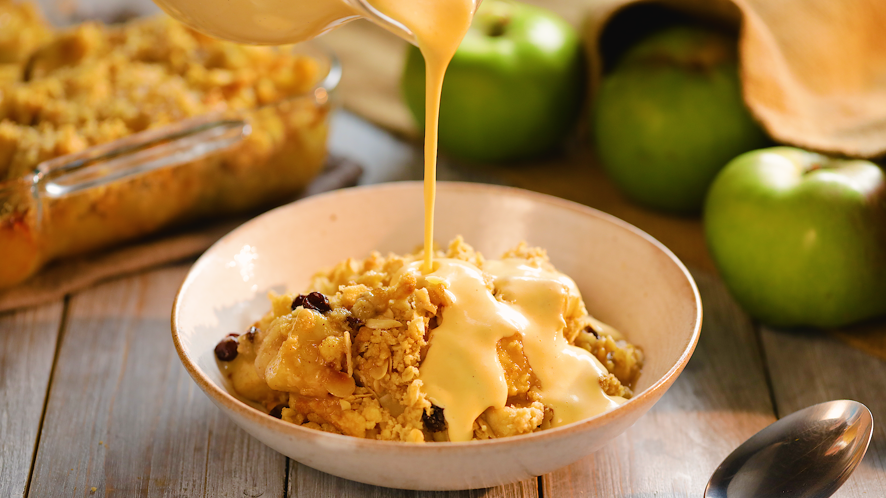

Apple Crumble

Description
Apple crumble is a popular dessert that consists of baked apples with a sweet and crunchy topping. It is a simple and comforting dessert that is especially popular in British and American cuisine.
Ingredients
For the filling:
- 6-7 medium-sized apples (peeled, cored, and sliced)
- 1/2 cup granulated sugar
- 1 tablespoon lemon juice
- 1 teaspoon ground cinnamon
- 1/2 teaspoon ground nutmeg
For the crumble topping:
- 1 cup of flour
- 1/2 cup of rolled oats
- 1/2 cup of brown sugar
- 1/2 cup of unsalted butter
Steps
- Preheat your oven to 350°F (175°C).
- In a large mixing bowl, combine the sliced apples, granulated sugar, lemon juice, ground cinnamon, and ground nutmeg. Toss the apples to coat them evenly with the sugar and spices.
- Place the apple mixture in a greased 9x9-inch (23x23 cm) baking dish or a similar-sized ovenproof dish.
- In a separate bowl, make the crumble topping. Mix the all-purpose flour, rolled oats, brown sugar, and cold, diced butter. Use a pastry cutter, fork, or your hands to blend the ingredients until the mixture resembles coarse crumbs. You can adjust the texture by adding more flour or oats if needed.
- Sprinkle the crumble topping evenly over the apple mixture in the baking dish.
- Place the baking dish in the preheated oven and bake for about 40-45 minutes or until the topping is golden brown and the apple filling is bubbling around the edges.
- Remove the apple crumble from the oven and allow it to cool for a few minutes before serving.
- Serve the apple crumble warm with a scoop of vanilla ice cream or a dollop of whipped cream if desired.